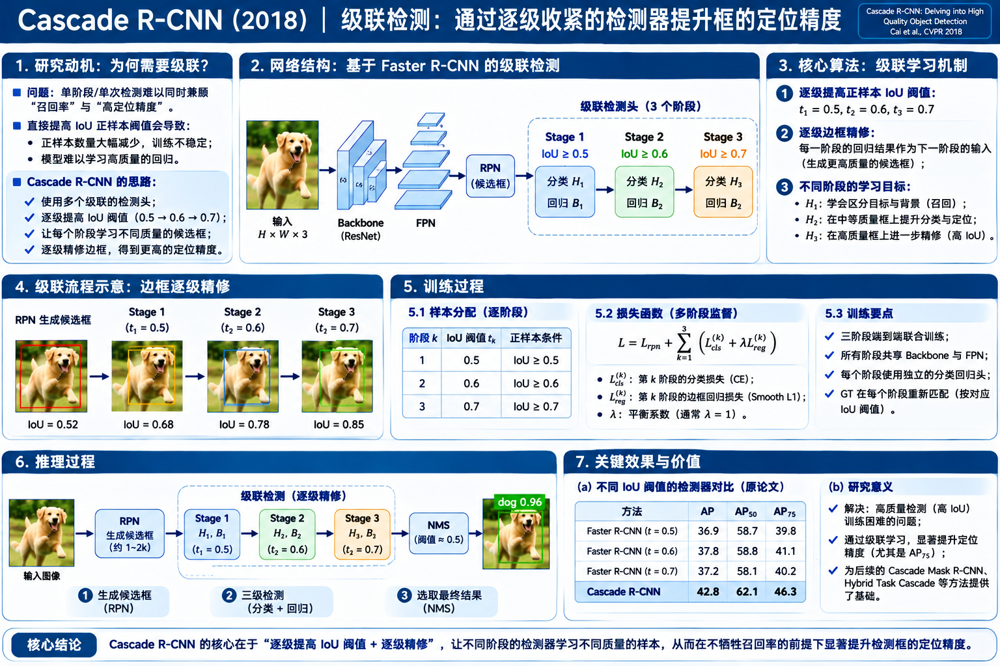

Cascade R-CNN 算法原理研究笔记
Faster R-CNN 可以把候选框回归得更准确，但一个在 IoU ≥ 0.5 样本上训练的检测头，未必擅长辨别高精度框。Cascade R-CNN 让候选框逐级变准，同时让后级检测头的训练标准逐级提高，从而匹配每一级面对的框质量。
研究动机：提高 IoU 阈值，为什么不一定提高检测精度？
论文首先发现：高质量检测头不能只靠更严格的正样本门槛，还需要更合适的候选框输入。
1.1 高质量检测悖论（High Quality Detection Paradox）
传统 Faster R-CNN 在第二阶段通常采用 IoU ≥ 0.5 作为前景判定标准。这样容易得到足够多的正样本，但某个预测框即使只覆盖目标的一半，也可能被归为正样本。结果是分类器未必能区分一个“粗略正确的框”和一个“精确贴合的框”。
只用 0.5 的阈值
正样本丰富，但训练目标只要求粗略重合，对贴边精度的区分不足。
直接换成 0.7
训练正样本可能骤减，高质量检测头容易过拟合；测试时仍收到较差的 RPN Proposal。
先把框变好，再提高门槛
第一级训练 0.5，回归得到更好的框；再以这些框训练 0.6、0.7 的后续检测头。
1.2 为什么不能只把 Faster R-CNN 的回归头运行三次？
| 方案 | 训练检测头 | 推理如何处理框 | 根本问题 |
|---|---|---|---|
| 单个 Faster R-CNN | 一套分类 + 回归，常用 u=0.5 | RoI → 回归一次 | 未针对高精度框优化 |
| Iterative BBox | 同一个回归器，重复调用 | RoI → 同一回归器 → 同一回归器 | 回归器没有针对“回归后更精确的框”重新训练 |
| Cascade R-CNN | H₁/B₁、H₂/B₂、H₃/B₃：不同参数、不同训练质量 | 一级回归输出成为下一级输入 | 样本分布与检测器能力逐级配套 |
网络结构：在 Faster R-CNN 后面串联三个检测阶段
不是三套完整 Backbone，也不是重复运行 RPN。共享一张特征图，逐级重提 RoI 特征并修正框。

2.2 每一级到底要新学什么参数？
先识别、先粗修
输入来自 RPN 的 B⁰。RoI 特征 → H₁ 分类、B₁ 回归 → 输出 B¹。
更严格地再识别、再回归
输入上一阶段修正后的 B¹。重新提 RoI 特征 → H₂、B₂ → 输出 B²。
对高质量框作精细判别
输入更精确的 B²。重新提取 RoI → H₃、B₃ → 输出 B³。
核心算法：候选框逐级变准，同时训练样本逐级变“难”
把“连续修框”和“重新标注框”放在同一条数据流里理解，是整篇最关键的地方。
3.1 交互实验：一个框经过四个位置后，IoU 如何变化？
下方是教学框序列：GT 保持不变，B⁰ 是 RPN 提案框；B¹、B²、B³ 是三个不同阶段回归后的输出。你可以逐级查看坐标如何变化。每个 IoU 都由当前框与 GT 的真实交并比计算，不是随意赋值。
RPN 只是提供初始框
B⁰ 尚未接受级联检测头的精细修正；Stage 1 用它计算 RoI 特征并输出第一轮分类和回归。
3.2 正负样本重新分配：真正解决“高 IoU 正样本不足”的关键
回归之后，新的候选框分布往往比 RPN 原始分布更靠近 GT。如果在这些更好的输入框上使用更高 IoU 阈值，就可以避免“直接在粗糙 RPN 框上使用 0.7”造成的正样本大量减少。
原始框的 IoU（10 个）
越靠右 IoU 越高；绿色表示满足当前阈值。
第 2 轮修正后的 IoU（10 个）
不改变样本数量，只改变它们的质量分布（教学示例）。
关键不是重复使用旧标签
Stage 2 输入的是 B¹，应当按 B¹ 与 GT 的最大 IoU 定义新的标签；Stage 3 输入 B²，同理。新框、新特征、新标签、新回归目标四者必须一致。
更高门槛也让负样本变“难”
在 Stage 3，一个 IoU=0.65 的框不满足 0.7 正样本标准，即使它在 Stage 1 可以是前景。因此后期分类头学到更严格的定位质量判别。
3.3 每一级都预测 4 个框偏移，但回归器不是同一个
tₓ=(gₓ−bₓ)/b_w tᵧ=(gᵧ−bᵧ)/b_h
t_w=ln(g_w/b_w) t_h=ln(g_h/b_h)
b：当前输入候选框；g：匹配 GT；t：当前阶段需要学会的相对变换。
当一个框从 B⁰ 变成 B¹，它离 GT 更近，因此下一次回归目标通常也变小，数值分布发生变化。Cascade R-CNN 为三个阶段分别训练回归器 B₁、B₂、B₃，让它们适应各自的框质量与目标统计。
完整训练：四组监督分别优化谁？
一组 RPN 的提议框损失 + 三组检测阶段各自的分类、回归损失，联合训练共享特征和各级检测头。
GT boxes + classes
计算 RPN cls / reg
H₁ + B₁ + L₁
H₂ + B₂ + L₂
H₃ + B₃ + L₃
4.2 目标函数：三阶段不是三次完全相同的 Loss
Lₜ = L_cls(Hₜ(xₜ), yₜ) + λ · [yₜ > 0] · L_loc(Bₜ(xₜ, bₜ), g)
t∈{1,2,3}；xₜ 来自本级输入 RoI 的特征；yₜ 由本级输入框 bₜ 与 GT 的 IoU 阈值 uₜ 决定；g 是匹配 GT；[ ] 为指示函数，只有正样本计算定位损失。
L_total = L_RPN + Σₜ₌₁³ wₜ Lₜ
每级 Lₜ 内含分类与框回归；wₜ 代表阶段权重，具体权重与归一化因实现而异。原论文的单级公式设 λ=1；多级权重不意味着必然每级使用同一种数值。
分类 Loss：识别质量不同
不同的 uₜ 产生不同的前景/背景标签，分类器 Hₜ 学习不同质量标准。
定位 Loss：回归输入不同
B₁ 学 B⁰→GT；B₂ 学 B¹→GT；B₃ 学 B²→GT。背景框通常没有正样本回归目标。
共享主干：接收多阶段监督
每级 RoI 特征来自共享 Backbone，因此各级分类和回归的梯度都可以帮助更新主干参数。
4.3 反向传播：为什么不能说“所有操作都可以跨级求导”？
完整推理：没有 GT，也不会用 0.5 / 0.6 / 0.7 给框贴标签
把训练的“根据 GT 匹配”去掉，只保留相同的三级精修路径。
可选 FPN
Proposal NMS
生成更准确 B¹
H₂ / B₂ → B²
H₃ / B₃ → B³
按类别 NMS
5.1 为什么每一级都有分类分数？最终使用谁的分数？
每一级都会判断当前 RoI 的类别，而 RoI 本身在逐级改善。论文在其三阶段实验中，使用不同阶段分类分数的平均（ensemble）配合最后阶段的回归框进行最终检测。具体实现也可以有不同的融合策略。
三个阶段的类别分数平均
检测框的精修路径仍是 B⁰ → B¹ → B² → B³；分类分数平均并不等于框坐标也做平均。
研究贡献与实验证据：真正的增益在哪里？
它不是单纯“多几个 Head 就更准”，而是阶段特化、样本重分配、训练推理质量匹配的共同结果。
| 方法 | AP | AP₅₀ | AP₇₀ | AP₉₀ |
|---|---|---|---|---|
| FPN+ baseline | 34.9 | 57.0 | 43.6 | 7.1 |
| Iterative BBox | 35.4 | 57.2 | 44.2 | 8.1 |
| Integral Loss | 35.4 | 57.3 | 44.4 | 6.9 |
| Cascade R-CNN | 38.9 | 57.8 | 46.9 | 15.8 |
这里原论文 Table 1 报告的是 AP₅₀、AP₆₀、AP₇₀、AP₈₀、AP₉₀ 而不是 AP₇₅；表头明确保留 AP₇₀，避免混淆 COCO 常见 AP₇₅ 指标。
更明显改善高质量定位
以此消融为例，AP₉₀ 从 7.1 提高至 15.8，增益尤其体现在要求高 IoU 的评价区间。
比单阶段更重
增加两级独立 Head 和 RoI 特征提取，有额外计算与推理时延。共享 Backbone 使代价通常低于重复整图卷积。
能叠加既有框架
Cascade 是对两阶段检测器 RoI Head 的组织方式，而不是一种必须绑定特定 Backbone 的网络。
五个容易混淆的问题
把结构、训练和推理的边界放到正确的位置。
Q1. 是三个完整的 Faster R-CNN 吗？
不是。通常只有一个共享 Backbone / RPN，后面串联多个参数独立的 RoI 检测头；不会为每个阶段从头重算一遍整图 Backbone。
Q2. 0.5 / 0.6 / 0.7 是 NMS 阈值吗？
不是。它们是三级检测头训练时判定前景正样本的 IoU 门槛。NMS 是候选框去重的另一套逻辑。
Q3. Stage 2 的正样本可以直接沿用 Stage 1 吗？
不能。它接收的是新框 B¹，必须重新计算与 GT 的最大 IoU，按 Stage 2 的 0.6 标准确定标签，并重新编码回归目标。
Q4. 为什么不是“不断修一个框”就够了？
同一回归器在不同质量区间未必最优。不同阶段的分类器、回归器需要针对本级输入框分布和质量阈值专门训练。
Q5. 后续类别回归一定都是 Class-specific 吗？
不一定。2018 原论文的主实验为简化使用类别无关回归。是否类别专属取决于具体实现；不影响 Cascade 的核心思想。
Q6. Cascade R-CNN 是实例分割网络吗？
本篇是 2018 年原始目标检测方案；后续可在 Mask R-CNN 上扩展为 Cascade Mask R-CNN 等实例分割架构，不应把两者的输出混为一谈。
论文与可复核依据
页面独立、离线可读；外部链接用于查原文，不影响图解与交互。
Cai, Zhaowei; Vasconcelos, Nuno. “Cascade R-CNN: Delving into High Quality Object Detection.” CVPR 2018, pp. 6154–6162.
CVF 官方论文页 ↗论文网页版 ↗作者公开实现 ↗模型机制、IoU 阈值、类别无关回归与表格原始指标依据原论文及作者实现；交互示意使用明确标注的教学数值，不代表在 COCO 上测得的真实分布。